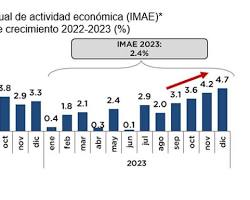

Ampliación de Cooperación Antinarcóticos con EE. UU.
Escrito por: Luis Angel Rojas el 20 de Julio

República Dominicana ha ampliado su cooperación con los Estados Unidos para reforzar la vigilancia y las
operaciones contra el narcotráfico y el tráfico de armas.
Contexto Internacional: Se ha reportado que Estados Unidos utilizará dos aeropuertos dominicanos para apoyar
sus operaciones contra el narcotráfico en el Caribe, como parte de la Operación Lanza del Sur, reforzando la
seguridad regional y golpeando al crimen organizado transnacional.
Liderazgo en Inversión Extranjera y Crecimiento Económico
Escrito por: Luis Angel Rojas el 30 de Noviembre

La economía dominicana continúa destacándose a nivel internacional, atrayendo flujos históricos de Inversión
Extranjera Directa (IED). El país fue reconocido como la marca país más valiosa de Centroamérica y el principal
destino de proyectos de IED en turismo y energías renovables en la región. Se proyecta que la República Dominicana
mantenga la mayor tasa de crecimiento económico en América Latina y el Caribe para 2026.
Aplazamiento de la Cumbre de las Américas
Escrito por: Luis Angel Rojas el 23 de Septiembre

La República Dominicana anunció el aplazamiento de la próxima Cumbre de las Américas, que estaba programada para
celebrarse en su territorio. La decisión fue atribuida a la dificultad de lograr un diálogo productivo y el consenso
entre los países de la región debido a las tensiones políticas actuales. La organización confía en reanudar la
planificación para un foro "productivo" en 2026.
República Dominicana como Sede de Eventos Globales en 2025
Escrito por: Luis Angel Rojas el 10 de Noviembre
El país se está consolidando como un centro neurálgico para la celebración de eventos de alto impacto internacional
en 2025. Entre ellos, se ha confirmado que será sede del Congreso Mundial de Derecho y de la ICAN (Negociación Aérea Internacional),
lo que refuerza su posición estratégica en temas de justicia global y su liderazgo en la aviación civil del Caribe.